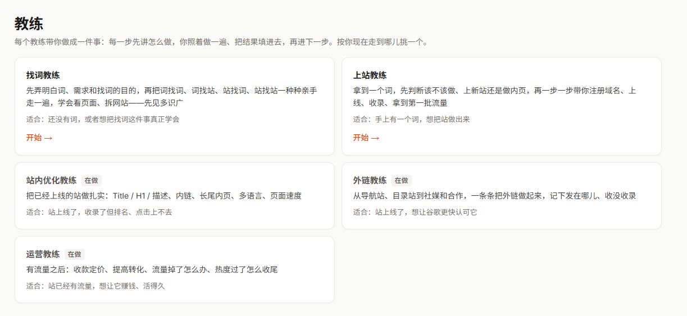
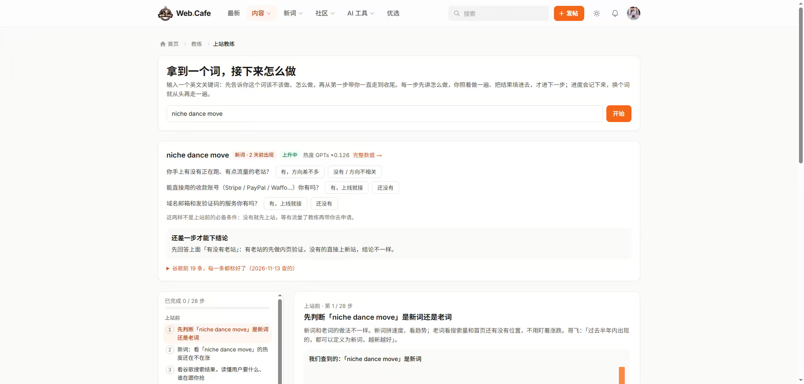

2026 年 11 月 14 日下午，群友虹安在群里贴了两张截图，配文只有一句：「哥飞做的这个教练板块好好用啊」。截图来自 web.cafe 的教练板块，它没有做成教程列表，而是把从找词到运营的整条路拆成了五个教练。
五个教练，各管一段路
板块首页把规则写得很直白：每一步先讲怎么做，你照着做一遍、把结果填进去，再进下一步；按你现在走到哪儿挑一个。
| 教练 | 带你做的事 | 适合谁 | 状态 |
|---|---|---|---|
| 找词教练 | 弄明白词、需求和找词目的，把词找词、词找站、站找词、站找站亲手走一遍 | 还没有词，或想把找词真正学会 | 可开始 |
| 上站教练 | 判断该不该做、上新站还是做内页，再带注册域名、上线、收录、拿第一批流量 | 手上有一个词，想把站做出来 | 可开始 |
| 站内优化教练 | Title / H1 / 描述、内链、长尾内页、多语言、页面速度 | 站上线了，收录了但排名、点击上不去 | 在做 |
| 外链教练 | 从导航站、目录站到社媒和合作，一条条做外链，记下发在哪儿、收没收录 | 站上线了，想让谷歌更快认可它 | 在做 |
| 运营教练 | 收款定价、提高转化、流量掉了怎么办、热度过了怎么收尾 | 站已经有流量，想让它赚钱、活得久 | 在做 |

五个教练里，找词和上站已经可以直接开始；站内优化、外链、运营三个还挂着「在做」的标记。
上站教练：一个词，28 步
点进上站教练，输入一个英文关键词就能开始。截图里用的是 niche dance move，系统判定它是两天前出现的新词，热度还在上升。

开始之前要先回答三个问题：手上有没有正在跑、有点流量的老站；有没有能直接用的收款账号；有没有域名邮箱和发验证码的服务。后两样不是上站前的必备条件——没有就先上站，等有流量了教练再带你去申请。
老站这一题会改变结论：有老站的先做内页验证，没有的直接上新站。页面在这里没有直接给答案，而是先把岔路摆出来。
往下是 28 步的流程，进度会记下来；换一个词，就从第一步重走一遍。第 1 步是「先判断这个词是新词还是老词」：新词拼速度、看趋势，老词看搜索量和首页还有没有位置，不用盯着涨跌。
页面引了哥飞的一句判断：「过去半年内出现的，都可以定义为新词，越新越好。」紧接着给出结论：我们查到的，「niche dance move」是新词。
判断依据也没有藏着——页面里标了「谷歌前 19 条，每一条都标好了（2026-11-13 查的）」，把看词的过程摊开在同一个页面上。
需要保留的边界
- 两张截图只覆盖板块首页和上站教练第 1 步，后面 27 步没有展开。
- 「好好用」是虹安一个人的使用评价，没有其他人跟帖，也没有具体到某一步的效果。
- 演示用的 niche dance move 只是示例关键词，页面判定它是新词、上升中，不代表这个词本身值得做。
原始对话
2026 年 11 月 14 日下午的群聊，原始记录共 4 条，按时间顺序全部保留。
聊天记录（4 条）
参与者 1 人：·虹安 · 时间范围 2026年11月14日 16:05 至 2026年11月14日 16:06 · 原始 4 条，保留 4 条